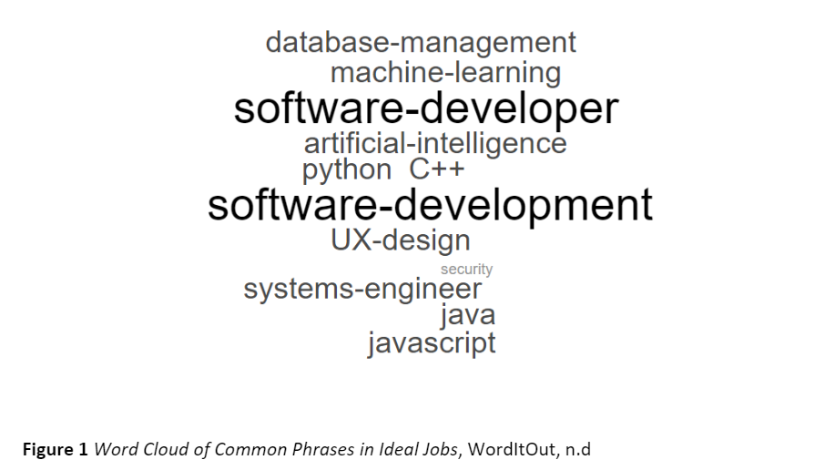
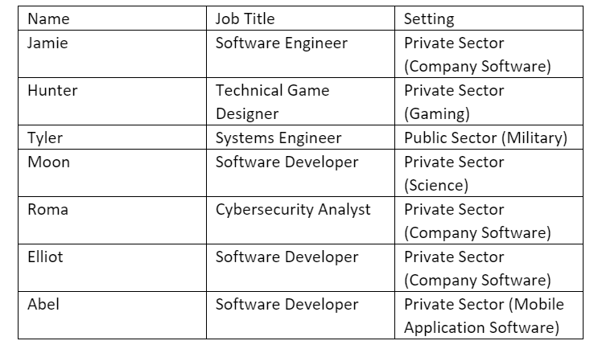

Team Data Against Industry Data
Team Data Report
Team Dynamic Summary:
It is consensus among RHAMJET members that MBTI is a largely baseless pseudoscience. Owing to lack of significant scientific evidence, mistrust in the creators of the theory, general scepticism, or a combination of. However, there is some merit to be found - and assuming the previous tests are accurate, the following is how we hypothesize team RHAMJET would work together.
We have a nice mix of types, learning styles, and no overtly conflicting personalities. This variety means team RHAMJET has many perspectives to offer for every intricacy of our assignment.
The group is primarily made up of introverts, with only two extroverts among us (Roma and Tyler). In theory this should lead to stagnant group meetings and difficulty communicating. However, in practice we’ve made great progress in meetings and communicate to an exceptional degree.
Much of the team is prospective (a 1 to 3 ratio, the same found in extroverts vs introverts). This could lead to an unstructured, unorganized workflow, but would also mean a high degree of flexibility in our planning. Regardless, our judging personalities should act as enough of an anchor to keep us on track regarding deadlines.
The variety of different learning styles and how we prefer to apply ourselves means we have many options in how we as team can approach a task. Each member will grasp different areas of a problem, and collaboration will only make us better.
Roma: Cybersecurity Analyst
This role involves assessing and investing vulnerabilities in the company’s software, hardware, networks, and system and protecting the information and systems from cyber-attacks to foster a more grounded, secure, and strong IT security systems and infrastructure.
- Hold a bachelor's degree in information technology, computer science or cybersecurity
- Have experience in IT or security position
- Scripting
- Hacking
- Networking
- Operating Systems
Hunter: Technical Game Designer
This position is a combination of design and programming. This position will design and program new content for the game and use feedback from players to improve the game. For this position, individuals can work either alone or only in small teams. I am interested in designing and programming games, that meets the role of this position, I am also a fan of this company’s game.
- C, C# or C++
- Maya or other 3D game engines
- Multiplayer Game Development
- Online Operation of a Live Game
Abel: Android Mobile Software Development
The role is about applying the knowledge and skills into creating the future of Pixel devices. Employees must meet the needs of Google; this means they are expected to change teams and projects in a fast-paced manner. With these skills they are required to design the system and deploy it (credit: careers.google.com). The position is ideally looking into people who can do everything within the design and development phase, this means being able to:
- Programs in Java or Kotlin
- Use Databases
- Hold a Masters or PHD in Computer Science or related fields
- Have experience in Android application development
- Have experience in networking
- Have experience in Security
- Apply Artificial Intelligence
- Work with UI Designs
Mooneeta: Bioscience Software Developmer
The role involves creating software for bioscience organizations. Creating databases and/or software that would manage things like genetic data. It will store and share data between doctors, research teams, and third-party institutions, and analyze data for studies. The role is responsible for managing and updating the infrastructure going forward, taking stakeholder’s changing needs and wants into account.
- Software Development and Design
- Python and JavaScript
- Uses Databases
- Bioinformatics
Jamie: Software Engineer – Front End Development for Company Software
The role involves developing updates for one of the company’s primary products which was software designed for clients to use and test their software before pushing into production. This would include having to create new features, redesign old or buggy features to better meet the user’s needs and working with users to develop a better product. This role looked for the following skills:
- Knowledge in JavaScript
- Knowledge in Tools such as VPM, Yarn and Webpack
- Following trends in JavaScript and browser space
- User Interface and User Experience Design
- Experience in Front-End frameworks and Modular Design
- Knowledge of Server-Side Languages
Elliot: Business Software Developer
I’ll be developing software for businesses and stakeholders to provide infrastructure for their servers and data systems. They will be looking for skilled IT professionals who can effectively handle the back-end development of their systems and ensure that things run as efficiently as possible. They will also need to be an adaptable person and assertive in adequately communicating with other team members.
- Python, Java, and C++
- Database management
- Data science
- Program development
- Communication skills
- Network security
- UX Design
Tyler: Combat system research engineer – artificial intelligence and machine learning
This job is about developing and training artificial intelligence using machine learning. The job is for ‘defense’ technologies for the Australian department of defense. The job is obviously very secretive about the exact nature of the projects that you would be working on specifically, but it does mention that the position would be specifically focusing on naval warfare, in a defensive context rather than offensive:
- Artificial Intelligence, Machine Learning
- Software Development and Design
- Mathematical Modelling and Simulation
- Mechanical or Systems Engineering
Ideal Job Report
In analyzing the group’s preferred jobs, the most common factor is software development and the programming languages that are in demand, such as Python, Java, and JavaScript, being highly coveted by companies. However, it is the type of software and the sectors that differ from all of us. Some of us will be working with the more corporate side of things, working on back-end development for large companies or start-ups. This would entail providing infrastructure for the company’s data management systems, creating mobile applications, setting up cloud services or ensuring that all their operating systems can run smoothly and efficiently.
Our other members will be working on other areas of software development. Mobile gaming development is an ever-expanding field with a plethora of opportunities to choose from. We may contribute to the science industry, helping expand the biomedical field and help combat diseases or make scientific breakthroughs. Or we may help serve the country, tinker, and masterfully engineer more high-tech military systems, working in the R&D branch.
The career plans of our group are realistic and achievable with enough effort put in, as many of us want to find work in jobs that help serve users and people whether it be for science, defense, or general usage. Most of us intend to work in jobs that belong to the private sector, but there is an exception with Tyler, who plans to serve the public in the military as a systems engineer.
Infographics (Ideal Job)
 Industry Demand Report
When it came to deciphering which team member’s ideal job title was the most in demand, based off the title itself independent of the industry, it was revealed by BurningGlass that Systems Engineers had been in the most demand, taking up 5.99% of the total job demand listed in Burning Glass. While there was no clear answer for the lowest demand job title, further research using the Australian Government’s Labour Market predictions revealed that Hunter held the lowest demand job due to its low potential growth in industry and lower median pay when compared to everyone else’s combined data. However, Roma’s job title of Cybersecurity Analyst was predicted to be the highest growth job title along with highest median pay, so in terms of future demand she may ultimately have the most in-demand job title.
The required skillsets generally match up with the most in-demand skills required, especially with the general skills that can be applicable to any career such as Communication skills which came up often, however the technical skills were surprisingly more varied than assumed, with skills like Scrum, Building Relationships and Business Analytics generally being more in demand than the required skillsets gathered from our ideal jobs. The three most in-demand skills not found in our required skillsets were:
Despite now everyone having observed the data, no one in team RHAMJET expressed any interest in changing their ideal job titles, whether seemingly out of passion, laziness to google another ideal job title or being content despite the information given.